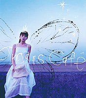

|
 「ah～Never forget you」
「鍵」 |
ah～Never forget you (2001.07)Organs CaféThis is the first single I recommend in the gallery of my homepage. The reason is, it is really hard to find their CDs or music. They have stopped their music activities since 2007 (but continued to perform in pubs till 2011, as far as I know). Although they were in act from 2001, there were only little singles and albums have been released. This single is a surprise when I wandered in the private CD shop I visited very often in 2007. I was attracted by the cover, the blue and the girl. In fact, there are only two members in this band: 加藤 沙香菜(Sakana Kato) is the vocalist and wrote all the lyrics; 林 良(Ryo Hayashi) plays the keyboard and wrote all the songs. Kato is the girl on the cover. The fact is that my choice is the best. Both songs, "ah～Never forget you" and "夏の匂い" have very strong senses of ocean in the summer evening. Before I bought the CD, I returned from my trip in Hong Kong and Macau in 2007. The peace of the Repulse Bay in the evening in Hong Kong impressed me a lot, as well as the comfortable feelings of winter. Before that, I thought, ocean or sea should has a very grand scale with surf boards and bright sunlight, like that in California or somewhere else. Since then, I loved the peaceful sea in the winter night. With this feeling, I listened to this CD, and felt myself in there once more. Even if both of them are about summer, I interpreted them in my heart as the scene I see in Hong Kong. Recently, I listened to one of their songs released in the 2nd album 『鍵』(2004.02.25): 「鍵」(Lock). I playback it for the whole night! Unfortunately, their CDs are really rare. They are not popular, but I love their peaceful music and Bossa Nova or Jazz. I wish one day I can take this single and visit Hong Kong again. XD Track List:
Release Information: |